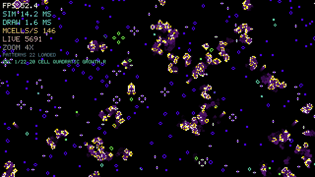

- Version one of four. Same rules, same output, four rewrites of the inner loop, benchmarked on the same machine, flags, seed and grid size.
- On an i7-12700F, release build:
SIM 14.3 ms,DRAW 1.6 ms,145 MCELLS/S,FPS 51.8.SIMis the number the rewrites are aimed at. - Planned ladder: naive, then mechanical sympathy (flat
vector<uint8_t>, both buffers allocated once), then algorithmic (bit pack 32 cells into auint32and compute all 32 with bitwise full adders), then a fragment shader ping ponging two textures. - The grid is a flat vector indexed
y*W+xand the simulation step knows nothing about rendering, decided at version one so version four is a swap rather than a rewrite. - Patterns load from
patterns/as RLE files, the format Golly and the LifeWiki use. 22 in the folder, nothing hard coded. - Why it exists: to be able to say, with numbers, what the difference is between arranging work better and doing less work.
Mandelbrot came out of the same sitting and is the same exercise: a tight numeric loop, a window, and nothing between me and the pixels.